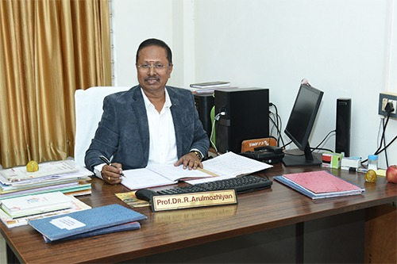

About Us
Cultivating Excellence Since 2017
Discover the legacy, vision, and values that make KSAC a leader in agricultural education
Discover the legacy, vision, and values that make KSAC a leader in agricultural education
Dhanalakshmi Srinivasan Agriculture College was established in 2017 under the Dhanalakshmi Srinivasan Charitable and Educational Trust with a vision to revolutionize agricultural
Established in 2017, KSAC has rapidly grown into a premier institution for agricultural studies in Tamil Nadu.
Located 2.0 KM from Perambalur and 75 KM north of Tiruchirapalli Airport, our sprawling 114-acre campus features well-established farm and dairy facilities, providing students with hands-on experience in real-world agricultural practices.
Affiliated with Tamil Nadu Agricultural University, Coimbatore, we offer a comprehensive B.Sc. (Hons.) Agriculture program that combines theoretical knowledge with practical application, preparing students for successful careers in the agricultural sector.


Society is long dependent on education to provide the necessary stepping stone on one's path towards individual growth, which contributes directly to the growth of a society and country as a whole.
In view of the ever-increasing demand for professionally qualified youth, it has become imperative to increase the availability of quality higher education in diverse fields.
Dhanalakshmi Srinivasan Agriculture College strives to establish itself as a citadel of quality education in the global arena of agriculture education, actively updating itself with foresight, vision and perspective of committed learning.
"Dhanalakshmi Srinivasan Agriculture College strives to establish itself as a citadel of quality education in the global arena of agriculture education. We actively update ourselves with foresight, vision, and perspective of committed learning to meet global demands."
Dr. R. Arulmozhiyan has served in Tamil Nadu Agricultural University for 37 years in various capacities. As a researcher, he has headed the Horticultural Research Station, Yercaud, and authored three varieties as well as six technical bulletins. He has been awarded the "Best Tamil Book Award" and "Best Teacher's Award" from TNAU.

Founded in 1994 by Shri. A. Srinivasan, the Dhanalakshmi Srinivasan Charitable and Educational Trust runs 19 institutions, catering to the educational quest of students with a vision to provide quality education at affordable costs.
To be a world-class center of excellence in agricultural education, research, and extension, producing professionally competent and socially responsible agricultural graduates.
To provide quality education in agriculture and allied sciences. To undertake basic and applied research to address the challenges in agriculture. To disseminate scientific technologies to the farming community for sustainable agriculture.
To become a center of excellence in agricultural education, research and extension activities to serve the farming community and contribute to sustainable agricultural development globally.
To provide quality education in agriculture and allied sciences with state-of-the-art facilities, dedicated faculty, and industry partnerships to create skilled agricultural professionals.
Committed to achieving recognition as an 'institution of excellence' by consistently providing quality education with professionalism and global outlook.
Upholding the highest ethical standards in all our endeavors.
Embracing cutting-edge research and sustainable practices.
Serving farming communities with dedication and excellence.
Tamil Nadu Agricultural University, Coimbatore
ICAR (Indian Council of Agricultural Research)
Government of Tamil Nadu
Be part of a legacy that's shaping the future of sustainable agriculture